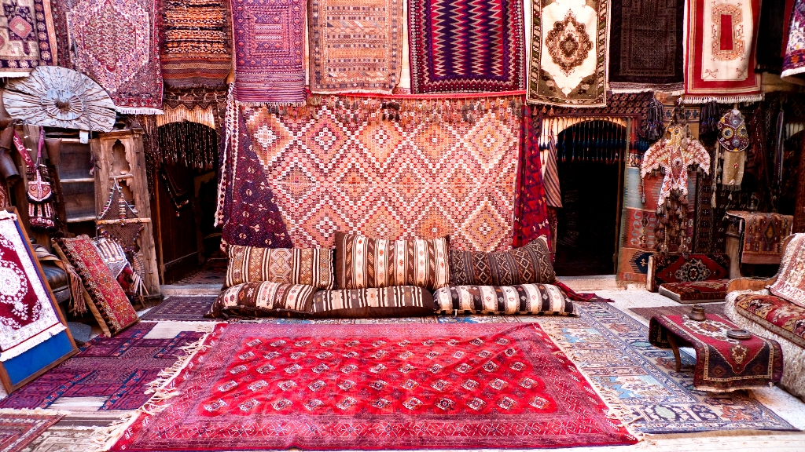

Колоритная национальная культура Азербайджана, уходящая корнями в глубь веков, вобрала в себя лучшие традиции Востока и Запада. Существует много различных источников, рассказывающих о древнем периоде культуры Азербайджана, о ранних образцах устного поэтического искусства. Ценнейшие записи собирателей фольклора, этнографические материалы, иллюстрации современных художников уводят нас в увлекательный мир древнейших культов - поэтических заклинаний, театрализованных игр, красочных ритуальных танцев, мудрых и наивных сказок, впитавших тотемические и историко-мифологические мотивы.
Привлекают фрагменты наскальных изображений Гобустана (близ Баку, 7000 - 2000 лет до нашей эры), образцы пехлевийских, албанских, арабских надписей, сохранившиеся на уцелевших частях архитектурных строений письменные источники и экспонаты, касающиеся Кавказской Албании, этого древнего развитого государства в северной части Азербайджана.
Азербайджанская земля колыбель поэтов. Уже в период арабского халифата представители азербайджанской письменной литературы - Исмаил ибн Яссар и Муса Шехеват упомянуты в рукописи XI века "Китабуль-Агани" ("Книга песен") Абуль Фараджа Исфагани. Период 8-10 веков характерен известностью азербайджанских ученых - медиков, правоведов. В Музее Литературы Азербайджана мы узнаем о поэте и ученом Хатибе Тебризи, о философе Бахманяре (талантливый ученик ибн Сины (Авиценны)) и знакомимся с возникшим в X-XI вв. народным героическим эпосом "Китаби Деде Коркуд". Бахманяр написал "Книгу образования", "Книгу украшения о логике", "Книгу красоты и счастья". Рукопись его книги "Ат-тахсил" до сих пор хранится в рукописных фондах Лондона, Каира, Тегерана, Бейрута. Прославили азербайджанскую литературу такие гениальные поэты Востока, как Низами Гянджеви, чье пятикнижие "Хамсе" по праву входит в сокровищницу мировой литературы, его современник Афзаладдин Хагани, Мехсети Гянджеви, Мухаммед Физули, Молла Панах Вагиф, Хуршуд-бану Натаван, драматург и мыслитель Мирза Фатали Ахундов, сатирик Сабир, Джалил Мамедкулизаде.
Азербайджан дал миру великого теоретика музыки, Сафиатдина Урмави, создавшего новую нотную систему в 13 веке. С именами великих азербайджанских ученых и музыкантов Сафиаддина Урмави и его последователя Абдулгадира Мараги связан расцвет музыкально-теоретической мысли в XIII-XV веках на Ближнем и Среднем Востоке. Мараги был высокоодаренным и разносторонне образованным музыкантом, певцом, исполнителем на многих музыкальных инструментах. Автор музыкальных сочинений, обладатель аналитического ума, Мараги создал труды, оказавшие большое влияние на развитие музыкально-теоретической мысли. Английский ученый-востоковед Генри Д.Фармер назвал Мараги "последним классиком" средневековой науки о музыке. Исфизари (XV в.) утверждает, что Мараги обладал тремя талантами - музыканта, художника-каллиграфа и поэта. В " Фирмане" (указе) Тимура (1397 г.) Мараги назван "падишахом всех знатоков музыки". Ранний этап (конец XIX - начало XX века) становления азербайджанской оперы и симфонической музыки связан прежде всего с широкой - поистине подвижнической - музыкальной, творческой и общественной деятельностью Узеира Гаджибекова, основоположника современной профессиональной музыки Азербайджана. Узеир Гаджибеков создатель первой оперы на Востоке ("Лейли и Меджнун", 1908). Соратниками выдающегося композитора стали М.Магомаев, З.Гаджибеков. Азербайджанские оперы и музыкальные комедии возникли из глубин национального музыкального искусства устной традиции и непосредственно срослись с ним. Основу музыкального материала первых азербайджанских опер составили мугамы. Мугам - музыкальный феномен не только национальной, но и мировой музыкальной культуры. Среди 90 минут музыки, посланной на американском спутнике "Вояджер" в 1977 году иным цивилизациям, 2 минуты 20 секунд занимает мугам.
В середине 20 века в Азербайджане блистала самобытная композиторская школа (К.Караев, Ф.Амиров, Дж.Гаджиев, С.Гаджибеков, Ниязи, С.Рустамов, Т.Кулиев, А.Меликов, Дж.Джангиров, Р.Гаджиев), прославившая Азербайджан далеко за его пределами. В золотой фонд исполнительского мастерства вписаны имена Бюль-Бюля, Рашида Бейбутова, Вагифа Мустафазаде. Их традиции продолжили композиторы и исполнители Ш.Алекперова, П.Бюль-Бюль оглы, М.Магомаев, Р.Мустафаев, Т.Гаджиев, Э.Сабит-оглы, Н.Мамедов, О.Кязимов, Р.Миришли и другие.
Азербайджанский театр обладает древней историей. Элементы театрального искусства, такие, как исполнение, пение, пляски, движения, беседы и пр. позволяют предположить, что история азербайджанского театра насчитывает более трех тысячелетий. Такие компоненты театрального искусства, как драматургия, режиссура, актерское ремесло нашли отражение в широко известных в народе с древних времен театрализованных сценах «Кёс-кёса», «Гаравелли», «Килим-арасы», «Шах Селим», а также в таких небольших спектаклях, как «Невеста Кёса», «Пастух Тапдыг», «Оленья игра», «Ведьма». Эти театрализованные сцены, а также комедия в трех действиях «Братец лентяй», которая имела определенное морально-воспитательное значение для своей эпохи, свидетельствуют о том, что азербайджанский народный театр имеет независимую историю.
Оперное искусство в Азербайджане начало свое развитие в начале прошлого столетия. Основа оперного искусства в Азербайджане была заложена 12-го января 1908-го года поставленной в Х.З. Тагиевском театре Баку оперой «Лейли и Меджнун» гениального азербайджанского композитора Узеира Гаджибекова. Эта опера является первой оперой на всем мусульманском Востоке. Несмотря на то, что история создания балета в Азербайджане приходится на 1940-й год (дата постановки балета Афрасияба Бадалбейли «Гыз галасы» – «Девичья башня»), на деле зарождение балета состоялось в начале 20-х годов прошлого века. Так, в 1923-м году в Баку была создана частная балетная студия.
Азербайджанское кино — национальное киноискусство и киноиндустрия Азербайджана, зародившееся в конце XIX века. В целом, со времени зарождения кино в Азербайджане было снято около 240 полнометражных и более 50 короткометражных художественных фильмов, также свыше 1200 документальных и около ста мультипликационных фильмов. История азербайджанского киноискусства начинается с 1898-го года. Первые отечественные фильмы состояли из сюжетов хроники, снятых фотографом и прозаиком А.М.Мишоном ("Пожар нефтяного фонтана в Биби-Эйбате", "Нефтяной фонтан в Балаханах", "Народное гуляние в городском саду", "Кавказский танец" и др.) и одного художественного киносюжета - "Илишдим"("Попался"). Зрителям эти фильмы были показаны на специально организованном киносеансе 2 августа того же года. Названные сюжеты в 1900-м году были продемонстрированы на Всемирной Выставке в Париже и там же сохранены. Два сюжета из архива кино Франции – «Пожар нефтяного фонтана на Биби-Эйбате» и «Нефтяной фонтан в Балаханах» в 2001-м году были возвращены в Баку. Эти киносюжеты в настоящее время хранится в фильмофонде на 35-и миллиметровой пленке и на видеокассете.
Изобразительное искусство Азербайджана. Одним из шедевров мировой живописи признана азербайджанская средневековая миниатюра. Иллюстрации к поэмам Фирдоуси и Низами, других поэтов, выполненные выдающимися азербайджанскими мастерами книжной миниатюры (Бехзад, его последователи), украшают многие музеи мира (Великобритания, США, Франция и др.). Ярким наследником средневековых корифеев был мастер конца XIX века начала XX века Бехруз Кенгерли. Колоритные полотна Саттара Бахлулзаде, картины Таира Салахова, Микаила Абдуллаева, Тогрула Нариманбекова украшают многие частные коллекции и музеи мира.
Kаменная пластика и искусство азербайджанских резчиков по камню разнообразно: здесь и круглая скульптура, и горельеф, и не глубокий резной рисунок. Издавна иностранных путешественников, посетивших Азербайджан, приводило в изумление изобилие рельефов с фигурами животных, людей, сюжетными композициями, высеченными на фасадах домов и на надгробных плитах. В степях Ширвана, Мугани, на равнинах Карабаха часто встречаются и скульптурные изваяния. Некоторые из монументов достигают 3-х и более метров высоты.Помимо чисто ритуальных моментов, эти памятники прославляли идеи непобедимости и могущества воздвигнувшего их народа. Из средневековых резных камней Азербайджана первыми заслуживают упоминания так называемые Баиловские камни - рельефные каменные плиты XIII века, поднятые со дна Каспийского моря.
Азербайджанская национальная одежда - плод народной материальной и духовной культуры, прошедшей долгий и очень сложный путь развития. Будучи тесно связаны с историей народа, костюмы представляют собой один из ценных источников изучения его культуры. Национальные костюмы больше, чем все другие элементы материальной культуры, отражают национальные особенности народа и принадлежат к числу стабильных этнических признаков. Играя роль вспомогательного материала в деле выяснения вопросов этногенеза, определения вопросов культурно-исторических связей и взаимного влияния между народами, костюмы зависят от уровня хозяйственных отраслей и от географических условий.
Азербайджан - один из уникальных ковровых регионов мира, где в течение веков вырабатывалось и достигло совершенства искусство мастеров, создавших лучшие образцы ковров и ковровых изделий, начиная с простейшего - паласа, и кончая наивысшим по сложности ворсовым ковром - халча.Археологические памятники рассказывают о том, что на территории Азербайджана искусство ковроткачества было известно еще в IX веке до н.э. Ныне Азербайджан известен по всему миру как безворсовыми ковровыми изделиями (палас, килим, сумах, зили, шадде и верни), так и 600 видами ворсовых ковров, изготовленных мастерами Губы и Ширвана , Гянджи и Газаха, Баку и Карабаха, Шуши , Джебраила, Тебриза и Ардебиля.
Керамика Азербайджана насчитывает несколько тысячелетий. К эпохе бронзы относится богатая коллекция керамической посуды Музея истории Азербайджана. Здесь собраны сапожковидные сосуды, кувшины различной формы, посуда, инкрустированная белой пастой. Уникален по своей росписи красноглиняный сосуд, найденный недалеко от селения Шахтахты (Нахчыван). Великолепно изготовленная и декорированная посуда, а также ювелирные украшения из металла, камня, кости говорят о расцвете в эпоху бронзы ремесел, о высоких художественных вкусах древних мастеров. Заслуживает внимания богатая люстровая и поливная керамика, обнаруженная при раскопках средневековых городов Азербайджана: Байлакана, Баку, Барды, Гянджи, Шемахи. Многие изделия выполнены с виртуозным мастерством, тонким изяществом и являются подлинными жемчужинами прикладного искусства Азербайджана.
Азербайджан является сокровищницей памятников архитектуры. На территории Азербайджана сохранились руины античных и средневековых городов. Столицы, центры ремесла и культуры государств v Нахчыван, Кабала (Габала), Барда (Партав), Гянджа, Шабран, Орен Кала (Бейлаган), Шемаха, Халхал и другие издревле привлекали завоевателей. Сохранились остатки многочисленных оборонительных сооружений - крепости и башни - Чирахкала, Дидван и другие, воздвигнутые в начале нашей эры и позже для защиты от нашествий кочевых племен и иноземных поработителей. Особый интерес представляет комплекс оборонительных сооружений на Апшероне. Башни Апшерона: в Мардакянах, Нардаране, Бильгях, Рамана, Маштага и другие. Символ Баку - Девичья башня (непокоренная) - восьмиярусное монументальное сооружение XII века высотой 28 метров и толщиной стен у основания 5 метров. В Азербайджане сохранились великолепные памятники зодчества Албании Кавказской - храмовые комплексы в с.Лекит, Кум Кахского района, в селениях Киш и Орта Зейзит Шекинского района. В Азербайджане много культовых сооружений - это храмы, монастыри и церкви, построенные в разные периоды истории. С XII века происходит укрепление государственности и развитие городов, где формируются архитектурные школы. Основатель Нахичеванской школы - прославленный на всем Востоке зодчий Аджеми сын Абубекра Нахичевани. Архитектурный шедевр - десятигранный мавзолей Момине-Хатун, общая высота которого достигала 34 м. Мавзолей мастерски декорирован сложным геометрическим орнаментом и письменами из керамики.